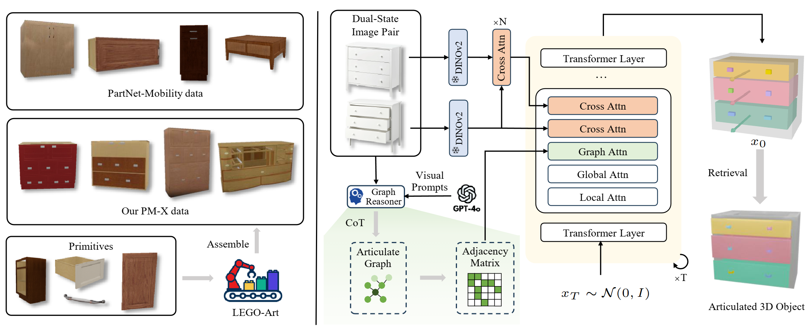
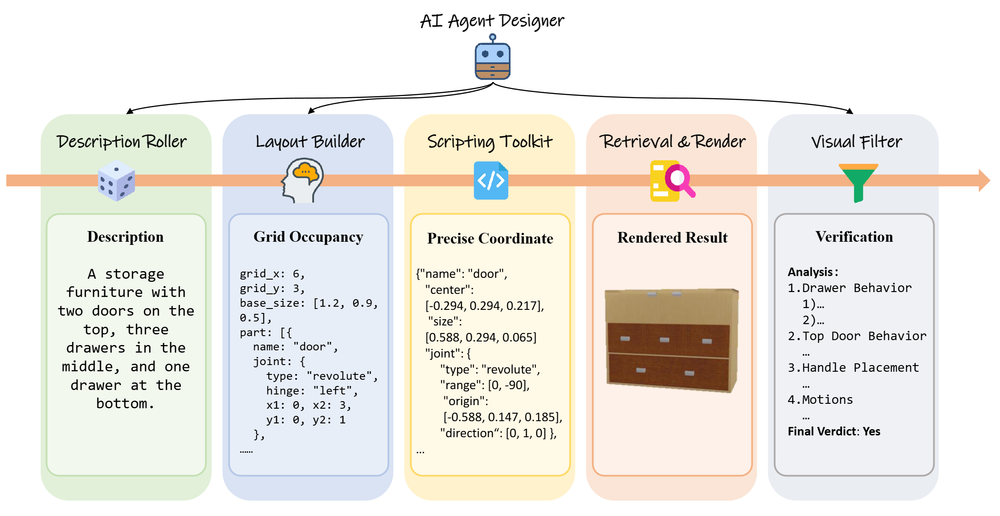
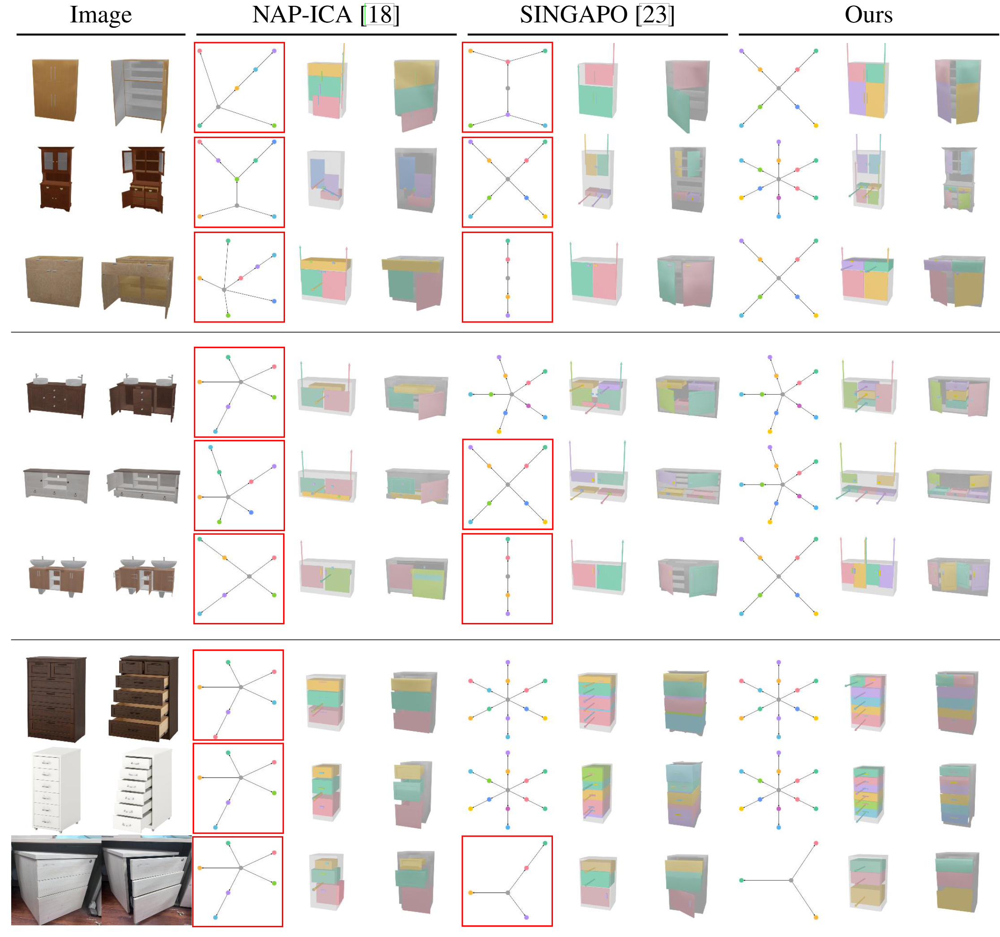

DIPO: Dual-State Images Controlled Articulated Object Generation Powered by Diverse Data
1VCIP, CS, Nankai University
2NKIARI, Shenzhen Futian
3Horizon Robotics
*Work done as Research Intern
†Corresponding Author
NeurIPS 2025
Abstract
We present DIPO, a novel framework for the controllable generation of articulated 3D objects from a pair of images: one depicting the object in a resting state and the other in an articulated state. Compared to the single-image approach, our dual-image input imposes only a modest overhead for data collection, but at the same time provides important motion information, which is a reliable guide for predicting kinematic relationships between parts. Specifically, we propose a dual-image diffusion model that captures relationships between the image pair to generate part layouts and joint parameters. In addition, we introduce a Chain-of-Thought (CoT) based graph reasoner that explicitly infers part connectivity relationships. To further improve robustness and generalization on complex articulated objects, we develop a fully automated dataset expansion pipeline, named LEGO-Art, that enriches the diversity and complexity of PartNet-Mobility dataset. We propose PM-X, a large-scale dataset of complex articulated 3D objects, accompanied by rendered images, URDF annotations, and textual descriptions. Extensive experiments demonstrate that DIPO significantly outperforms existing baselines in both the resting state and the articulated state, while the proposed PM-X dataset further enhances generalization to diverse and structurally complex articulated objects.
Method Overview

Our DIPO framework consists of three key components:
1. Dual-State Image Conditioning: We condition the denoising process on both resting-state and articulated-state images using DINOv2 features. A Dual-State Injection Module integrates motion-aware cues by performing cross-attention between the two states.
2. Chain-of-Thought Graph Reasoner: This module predicts articulated part connectivity graphs from dual-state images using a step-by-step reasoning paradigm. It identifies candidate parts, estimates spatial layouts, verifies articulation rules, and infers attachment relationships.
3. LEGO-Art Pipeline: A fully automated synthesis pipeline that generates complex articulated 3D assets by assembling part primitives from existing datasets. It includes Description Roller, Layout Builder, Scripting Toolkit, Retrieval & Render, and Visual Filter modules.
PM-X Dataset & LEGO-Art
We introduce PM-X (PartNet-Mobility-Complex), a large-scale dataset of structurally complex articulated objects built using our LEGO-Art pipeline.

Quantitative Results
We evaluate our method on both PartNet-Mobility and ACD datasets, demonstrating superior performance in reconstruction quality and graph prediction accuracy.
Results on PartNet-Mobility Test Set
| Method |
Reconstruction Quality |
Graph
Acc% ↑ |
| RS-dgIoU ↓ |
AS-dgIoU ↓ |
RS-dcDist ↓ |
AS-dcDist ↓ |
RS-dCD ↓ |
AS-dCD ↓ |
| URDFormer [6] |
1.2327 |
1.2332 |
0.2885 |
0.4403 |
0.4417 |
0.6910 |
6.62 |
| NAP-ICA [18] |
0.5706 |
0.5765 |
0.0563 |
0.2547 |
0.0209 |
0.3473 |
25.06 |
| SINGAPO [23] |
0.5134 |
0.5236 |
0.0487 |
0.1107 |
0.0191 |
0.1270 |
75.97 |
| DIPO (Ours) |
0.4561 |
0.4683 |
0.0359 |
0.0732 |
0.0132 |
0.0423 |
85.06 |
Qualitative Comparison

Our method demonstrates superior visual quality and better accuracy in articulation graph prediction. Thanks to the large-scale structurally diverse training provided by the PM-X dataset, DIPO shows better robustness when handling complex objects or real-world data.
Acknowledgements
This work was done while Ruiqi Wu was a Research Intern with Horizon Robotics. We thank the reviewers for their valuable feedback.
BibTex
@article{wu2025dipo,
title={DIPO: Dual-State Images Controlled Articulated Object Generation Powered by Diverse Data},
author={Wu, Ruiqi and Wang, Xinjie and Liu, Liu and Guo, Chunle and Qiu, Jiaxiong and Li, Chongyi and Huang, Lichao and Su, Zhizhong and Cheng, Ming-Ming},
journal={arXiv preprint arXiv:2505.20460},
year={2025}
}
Contact
Feel free to contact us at wuruiqi@mail.nankai.edu.cn